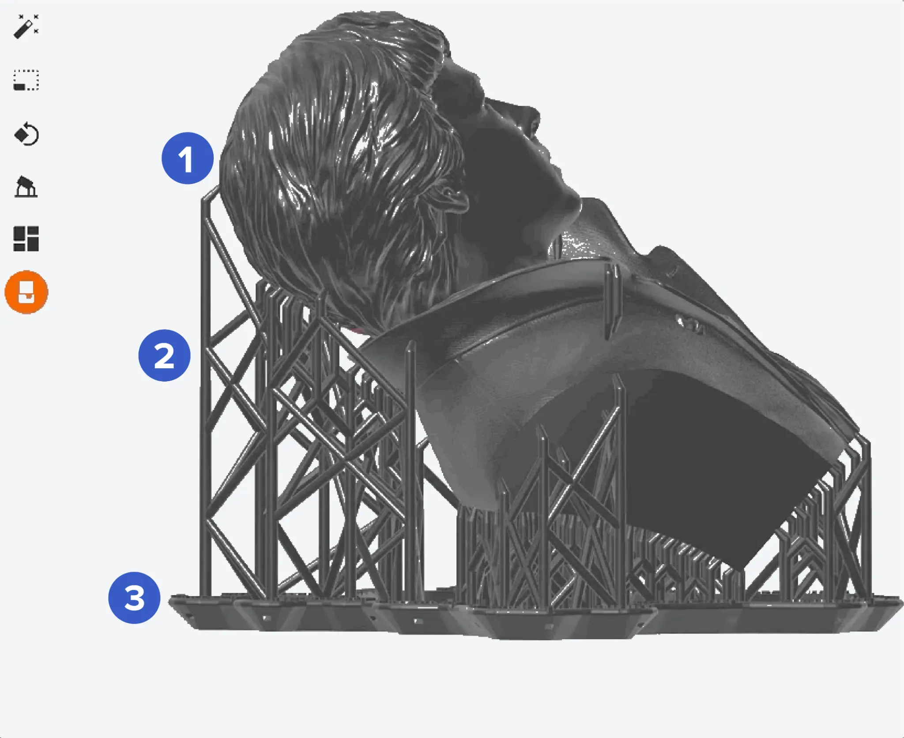
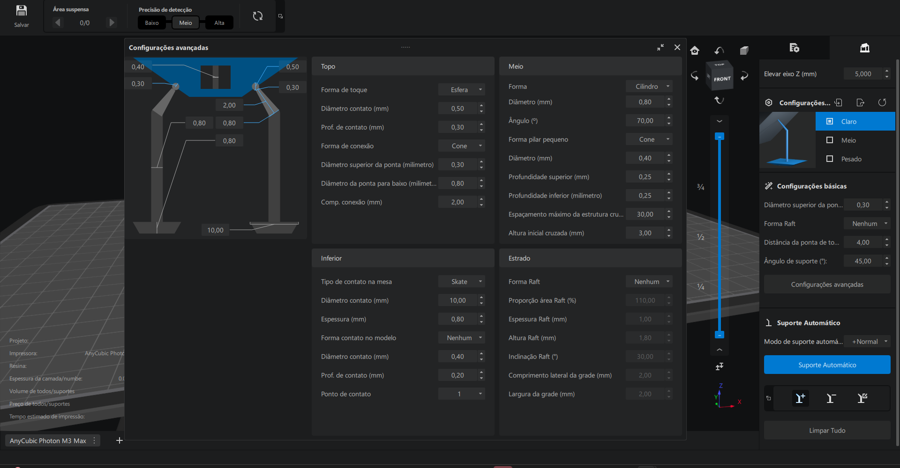
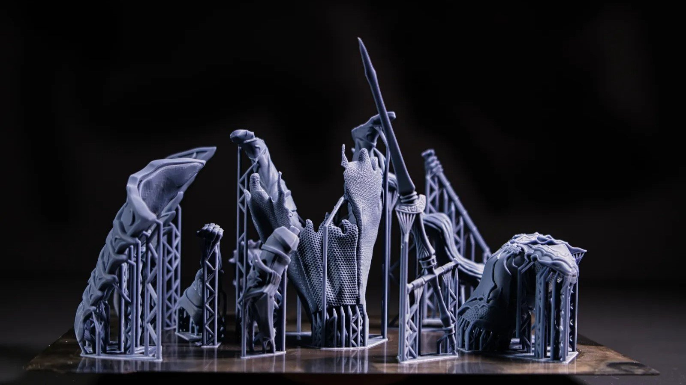
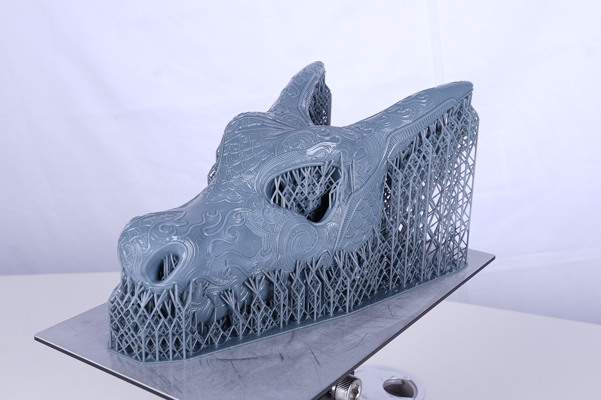

🎯 Por que Suportes São Importantes?
Suportes são estruturas temporárias essenciais na impressão 3D de resina. Eles sustentam áreas suspensas da peça durante a impressão, evitam deformações causadas pela força de sucção do FEP, e garantem que detalhes finos não quebrem durante o processo. Suportes mal posicionados resultam em falhas de impressão, marcas indesejadas na peça final e desperdício de resina. Este guia completo ensina como configurar e posicionar suportes perfeitamente usando o Chitubox!
Como Funcionam os Suportes

Os suportes em impressão de resina são compostos por três partes principais:
- Ponto de Contato (Topo): Pequeno ponto que toca a peça. Deve ser grande o suficiente para sustentar, mas pequeno o suficiente para ser removido facilmente sem deixar marcas.
- Pilar (Meio): Coluna que conecta o ponto de contato à base. Deve ser forte o suficiente para suportar o peso da peça e resistir às forças de sucção do FEP.
- Base (Inferior): Ponto de ancoragem na plataforma ou no estrado (raft). Distribui a força e garante estabilidade durante toda a impressão.
🎯 Princípio Fundamental
Regra dos 45°: Qualquer superfície com ângulo menor que 45° em relação à plataforma PRECISA de suporte!
Por quê? Abaixo de 45°, a nova camada não tem área suficiente da camada anterior para se apoiar, causando deformação ou falha.
Anatomia do Suporte no Chitubox

O Chitubox oferece controle completo sobre cada parte do suporte. Entenda TODOS os parâmetros:
🔝 Seção: TOPO (Ponto de Contato)
- Forma de Toque (Contact Shape):
O que é: Formato do ponto que toca a peça
Opções: Esfera, Cone
Recomendado: Esfera para áreas planas. Cone para áreas curvas
Por quê: Esfera distribui melhor a força. Cone penetra menos na superfície - Diâmetro Contato (Contact Diameter):
O que é: Tamanho do ponto que toca a peça
Valor típico: 0.50mm
Como ajustar: 0.30mm para detalhes finos. 0.50-0.80mm para áreas robustas
Impacto: Maior = mais forte, mais marca. Menor = menos marca, mais frágil - Prof. de Contato (Contact Depth):
O que é: Profundidade que o suporte penetra na peça
Valor típico: 0.30mm
Como ajustar: 0.20mm para superfícies visíveis. 0.40mm para áreas ocultas
Impacto: Mais profundo = mais forte, mais difícil remover
🏛️ Seção: MEIO (Pilar)
- Forma (Shape):
O que é: Formato do pilar central
Opções: Cilindro, Cone
Recomendado: Cilindro para peças pesadas. Cone para economizar resina
Por quê: Cilindro é mais forte. Cone usa menos material - Diâmetro (Diameter):
O que é: Espessura do pilar
Valor típico: 0.80mm
Como ajustar: 0.60mm para detalhes. 1.00-1.50mm para peças grandes
Impacto: Mais grosso = mais forte, mais difícil remover - Ângulo (Angle):
O que é: Inclinação do pilar em relação à vertical
Valor típico: 70°
Como ajustar: 60-80° conforme geometria da peça
Por quê: Ângulos maiores facilitam remoção e reduzem marcas - Forma Pilar Pequeno (Small Pillar Shape):
O que é: Formato de pilares curtos (para suportes próximos)
Opções: Cone, Cilindro
Recomendado: Cone
Por quê: Economiza espaço e resina - Diâmetro Pilar Pequeno:
O que é: Espessura de pilares curtos
Valor típico: 0.40mm
Uso: Suportes em áreas densas ou detalhadas - Profundidade Superior (Top Depth):
O que é: Comprimento da transição entre ponto de contato e pilar
Valor típico: 0.25mm
Impacto: Transição mais suave reduz concentração de tensão - Profundidade Inferior (Bottom Depth):
O que é: Comprimento da transição entre pilar e base
Valor típico: 0.25mm
Impacto: Melhora ancoragem na base - Espaçamento Máximo da Estrutura Cruzada:
O que é: Distância máxima entre suportes antes de criar reforço cruzado
Valor típico: 30.00mm
Uso: Para áreas grandes e planas, cria estrutura em treliça - Altura Inicial Cruzada:
O que é: Altura mínima do pilar para começar reforços cruzados
Valor típico: 3.00mm
Por quê: Pilares muito curtos não precisam de reforço
⚓ Seção: INFERIOR (Base)
- Tipo de Contato na Mesa (Platform Contact Type):
O que é: Formato da base que toca a plataforma
Opções: Skate (patim), Cone
Recomendado: Skate
Por quê: Distribui melhor a força e é mais estável - Diâmetro Contato (Contact Diameter):
O que é: Tamanho da base na plataforma
Valor típico: 10.00mm (Skate)
Impacto: Maior = mais estável, mais difícil remover da plataforma - Espessura (Thickness):
O que é: Altura da base tipo Skate
Valor típico: 0.80mm
Impacto: Mais grosso = mais adesão, mais desperdício - Forma Contato no Modelo:
O que é: Formato quando o suporte se conecta à própria peça (não à plataforma)
Opções: Nenhum (None), Cone, Cilindro
Recomendado: Nenhum ou Cone pequeno
Uso: Para suportes que se apoiam em partes já impressas - Diâmetro Contato (Model Contact):
Valor típico: 0.40mm
Por quê: Pequeno para facilitar remoção - Prof. de Contato (Model Contact Depth):
Valor típico: 0.20mm
Por quê: Raso para não danificar a peça - Ponto de Contato (Contact Point):
O que é: Número de pontos de ancoragem na base
Valor típico: 1
Uso: Múltiplos pontos para áreas muito pesadas
🏗️ Seção: ESTRADO (Raft)
- Forma Raft:
O que é: Formato da base comum para todos os suportes
Opções: Nenhum (None), Retangular, Circular
Recomendado: Nenhum para peças pequenas. Retangular para peças grandes
Por quê: Raft melhora adesão mas usa mais resina - Proporção Área Raft (%):
O que é: Tamanho do raft em relação à área da peça
Valor típico: 110% (10% maior que a peça)
Ajuste: 100-120% conforme estabilidade necessária - Espessura Raft:
O que é: Altura do raft
Valor típico: 1.00mm
Impacto: Mais grosso = mais estável, mais desperdício - Altura Raft:
O que é: Distância entre plataforma e raft
Valor típico: 1.80mm
Por quê: Espaço para resina fluir e facilitar remoção - Inclinação Raft (°):
O que é: Ângulo das bordas do raft
Valor típico: 30°
Por quê: Facilita remoção e reduz força de sucção - Comprimento Lateral da Grade:
O que é: Tamanho das células da grade interna do raft
Valor típico: 2.00mm
Por quê: Grade economiza resina mantendo resistência - Largura da Grade:
O que é: Espessura das linhas da grade
Valor típico: 2.00mm
Ajuste: Mais grosso = mais forte, mais resina
⚠️ ATENÇÃO - Diâmetro do Pilar
O diâmetro do pilar é o parâmetro mais crítico!
Pilares muito finos (< 0.60mm) quebram durante a impressão, causando falha total.
Pilares muito grossos (> 1.50mm) deixam marcas grandes e são difíceis de remover.
Regra geral:
• Detalhes finos e miniaturas: 0.60-0.80mm
• Peças normais: 0.80-1.00mm
• Peças grandes e pesadas: 1.00-1.50mm
Configurações Básicas Recomendadas
Use estas configurações como ponto de partida e ajuste conforme necessário:
| Parâmetro | Suporte Leve | Suporte Médio | Suporte Pesado |
|---|---|---|---|
| Uso | Detalhes finos, miniaturas | Peças normais, uso geral | Peças grandes, áreas planas |
| Diâmetro Contato Topo | 0.30mm | 0.50mm | 0.80mm |
| Profundidade Contato | 0.20mm | 0.30mm | 0.40mm |
| Diâmetro Pilar | 0.60mm | 0.80mm | 1.20mm |
| Ângulo | 75° | 70° | 65° |
| Base (Skate) | 8.00mm | 10.00mm | 12.00mm |
💡 Dica Profissional
Salve estes três perfis no Chitubox com nomes descritivos:
• "Quanton3D - Suporte Leve"
• "Quanton3D - Suporte Médio"
• "Quanton3D - Suporte Pesado"
Assim você pode alternar rapidamente entre eles durante o posicionamento!
Suporte Automático vs Manual

O Chitubox oferece suporte automático, mas ele nem sempre é perfeito. Entenda quando usar cada método:
🤖 Suporte Automático
- Vantagens: Rápido, cobre todas as áreas críticas, bom ponto de partida
- Desvantagens: Pode colocar suportes em áreas visíveis, às vezes usa suportes demais ou de menos
- Quando usar: Como base inicial, depois revisar e ajustar manualmente
- Configuração: Use modo "Normal" ou "Médio" como padrão
✋ Suporte Manual
- Vantagens: Controle total, pode evitar áreas visíveis, otimiza quantidade de suportes
- Desvantagens: Mais demorado, requer experiência, pode esquecer áreas críticas
- Quando usar: Para peças com áreas visíveis importantes, miniaturas detalhadas, ou quando automático falha
- Dica: Use automático primeiro, depois delete suportes ruins e adicione manualmente onde necessário
🎯 Método Híbrido Recomendado
1. Gere suportes automáticos no modo "Médio"
2. Revise a peça em 360° procurando por:
• Suportes em áreas muito visíveis (rosto, superfícies lisas)
• Áreas sem suporte que deveriam ter (< 45°)
• Ilhas (áreas isoladas sem conexão)
3. Delete suportes problemáticos
4. Adicione suportes manuais nas áreas corrigidas
5. Verifique novamente antes de fatiar!
Onde Colocar Suportes

Saber ONDE colocar suportes é tão importante quanto saber COMO configurá-los:
✅ SEMPRE Coloque Suportes Em:
- Superfícies com ângulo < 45°: Qualquer área inclinada precisa de suporte. Use a visualização de ângulos do Chitubox (vermelho = precisa suporte).
- Ilhas: Áreas que começam no meio do ar, sem conexão com camadas anteriores. São as principais causas de falha!
- Pontes longas: Áreas horizontais suspensas com mais de 5mm de comprimento. Coloque suportes a cada 3-5mm.
- Detalhes finos suspensos: Dedos, antenas, armas, cabelos. Use suportes leves mas abundantes.
- Bordas de áreas planas: Mesmo que o centro esteja acima de 45°, as bordas podem precisar de suporte para evitar "curling" (enrolamento).
- Áreas grandes e planas: Mesmo acima de 45°, áreas muito grandes sofrem força de sucção. Coloque suportes espaçados.
❌ EVITE Colocar Suportes Em:
- Rostos e superfícies visíveis: Suportes deixam marcas! Se inevitável, use suportes muito leves (0.30mm) e pós-processe.
- Áreas verticais (> 80°): Não precisam de suporte. Economize resina!
- Topos de peças: A última camada não precisa de suporte (não tem nada acima dela).
- Áreas que podem ser reorientadas: Às vezes girar a peça 45° elimina a necessidade de suportes.
⚠️ CUIDADO COM ILHAS!
Ilhas são a causa #1 de falhas de impressão!
Uma ilha é qualquer área que começa sem conexão com camadas anteriores. Ela não tem onde se apoiar e vai falhar 100%.
Como detectar: Use a ferramenta "Island Detection" do Chitubox. Áreas em vermelho são ilhas!
Como corrigir: Adicione suportes manuais em TODAS as ilhas detectadas. Não deixe nenhuma sem suporte!
Orientação da Peça
Antes de adicionar suportes, oriente a peça corretamente! A orientação certa reduz drasticamente a necessidade de suportes:
🎯 Princípios de Orientação:
- Minimize áreas planas paralelas à plataforma: Áreas planas horizontais sofrem muita força de sucção. Incline a peça 30-45°.
- Proteja detalhes importantes: Oriente a peça para que rostos e superfícies visíveis fiquem virados para cima (longe dos suportes).
- Reduza área de seção transversal: Quanto menor a área de cada camada, menos força de sucção. Peças "altas e finas" são melhores que "baixas e largas".
- Evite criar ilhas: Gire a peça para que áreas isoladas se conectem com o resto da geometria.
- Considere linhas de camada: Linhas de camada horizontais são mais visíveis. Para superfícies lisas, oriente para que as linhas fiquem diagonais ou verticais.
💡 Orientação Ideal Para Miniaturas
Incline 30-45° para trás: Isso coloca o rosto virado para cima (sem suportes) e distribui melhor o peso.
Gire levemente para o lado: Evita que braços e armas criem ilhas.
Base sempre para baixo: A base da miniatura deve tocar a plataforma ou raft para máxima estabilidade.
Remoção de Suportes
Remover suportes corretamente é tão importante quanto posicioná-los bem:
🛠️ Ferramentas Necessárias:
- Alicate de corte rente (flush cutter): Essencial! Corta suportes sem danificar a peça
- Estilete ou bisturi: Para suportes muito pequenos e detalhes finos
- Lixa fina (400-600 grit): Para suavizar marcas de suportes
- Primer e tinta: Para camuflar marcas em áreas visíveis
📋 Processo de Remoção:
- 1. Lave e cure parcialmente: Peça semi-curada é mais flexível e suportes saem mais fácil
- 2. Remova suportes grandes primeiro: Use alicate de corte rente, cortando o mais próximo possível da peça
- 3. Remova suportes pequenos: Use estilete para detalhes finos
- 4. Lixe as marcas: Lixa úmida 400 grit, depois 600 grit para suavizar
- 5. Cure completamente: Após remover todos os suportes, cure a peça final
- 6. Pós-processamento: Primer, tinta ou verniz para camuflar marcas restantes
⚠️ NUNCA Puxe ou Torça!
NUNCA puxe ou torça suportes para removê-los!
Isso pode:
• Quebrar detalhes finos da peça
• Deixar marcas grandes e irregulares
• Danificar a superfície ao redor
SEMPRE corte com alicate de corte rente! Faça movimentos de corte limpo, não de torção.
Erros Comuns e Como Evitar
Aprenda com os erros mais comuns para economizar tempo e resina:
| Erro | Sintoma | Solução |
|---|---|---|
| Suportes muito finos | Suportes quebram durante impressão, peça cai | Aumente diâmetro do pilar para 0.80-1.00mm |
| Suportes muito grossos | Marcas grandes na peça, difícil remover | Reduza diâmetro de contato para 0.30-0.50mm |
| Poucos suportes | Peça deforma, áreas caídas, detalhes quebrados | Adicione mais suportes em áreas < 45° |
| Muitos suportes | Desperdício de resina, tempo de remoção longo | Revise e delete suportes desnecessários (> 80°) |
| Ilhas não suportadas | Falha total de impressão, resina solta no tanque | Use "Island Detection" e suporte TODAS as ilhas |
| Suportes em áreas visíveis | Marcas feias em rostos e superfícies importantes | Reoriente a peça ou use suportes muito leves (0.30mm) |
| Ângulo de suporte errado | Suportes difíceis de remover, marcas profundas | Use ângulos maiores (70-75°) para facilitar remoção |
| Sem raft em peças grandes | Peça não adere à plataforma, falha no início | Adicione raft retangular 110% para peças > 50mm |
Checklist Antes de Imprimir
Use este checklist para garantir que seus suportes estão perfeitos:
- ☑️ Orientação otimizada: Peça inclinada 30-45°, detalhes importantes virados para cima
- ☑️ Todas as áreas < 45° têm suportes: Use visualização de ângulos do Chitubox
- ☑️ Todas as ilhas estão suportadas: Use "Island Detection" e verifique camada por camada
- ☑️ Suportes não estão em áreas muito visíveis: Ou use suportes leves se inevitável
- ☑️ Diâmetro do pilar adequado: 0.60-0.80mm para detalhes, 0.80-1.00mm para normal, 1.00-1.50mm para pesado
- ☑️ Ângulo de suporte correto: 70-75° para facilitar remoção
- ☑️ Raft adicionado se necessário: Para peças grandes (> 50mm) ou com base pequena
- ☑️ Visualização 360° completa: Gire a peça e verifique todos os ângulos
- ☑️ Simulação de fatiamento: Verifique camada por camada no modo de visualização
- ☑️ Parâmetros de impressão corretos: Tempo de exposição calibrado com gabarito Quanton3D
🎯 Regra de Ouro
"Melhor ter um suporte a mais do que um a menos!"
Um suporte extra custa centavos de resina e 10 segundos para remover.
Uma impressão falhada custa horas de tempo e muito mais resina.
Quando em dúvida, adicione o suporte!
Dicas Avançadas
Para usuários experientes que querem levar seus suportes ao próximo nível:
- Suportes em árvore (Tree Supports): Use para peças orgânicas complexas. Economizam resina e são mais fáceis de remover, mas requerem configuração manual cuidadosa.
- Suportes internos: Para peças ocas, adicione suportes dentro da cavidade para evitar colapso. Lembre-se de fazer furos de drenagem!
- Suportes graduais: Varie o diâmetro do pilar conforme a altura. Base mais grossa (1.2mm), topo mais fino (0.6mm) para otimizar resistência e remoção.
- Suportes preventivos: Em áreas críticas (rostos, detalhes finos), adicione suportes extras "por segurança" mesmo que pareçam desnecessários.
- Teste de suportes: Para peças caras ou complexas, imprima apenas os primeiros 10mm com suportes para validar antes de imprimir completo.
- Documentação de suportes: Tire screenshots da configuração de suportes que funcionou bem. Reutilize em peças similares!
- Suportes híbridos: Combine suportes automáticos leves com manuais pesados em áreas críticas para otimizar tempo e qualidade.
- Pré-cura estratégica: Para peças muito grandes, pause a impressão a cada 50mm e cure parcialmente. Isso reduz força de sucção nas camadas superiores.
💡 Truque Profissional: Suportes Invisíveis
Para miniaturas e peças artísticas onde marcas são inaceitáveis:
1. Use suportes ultra-leves: 0.25mm contato, 0.50mm pilar
2. Coloque suportes apenas em áreas que serão pintadas ou texturizadas
3. Use ângulo máximo (80°) para facilitar remoção
4. Adicione mais suportes para compensar a fragilidade
5. Remova com estilete afiado, não alicate
6. Preencha marcas com putty antes de pintar